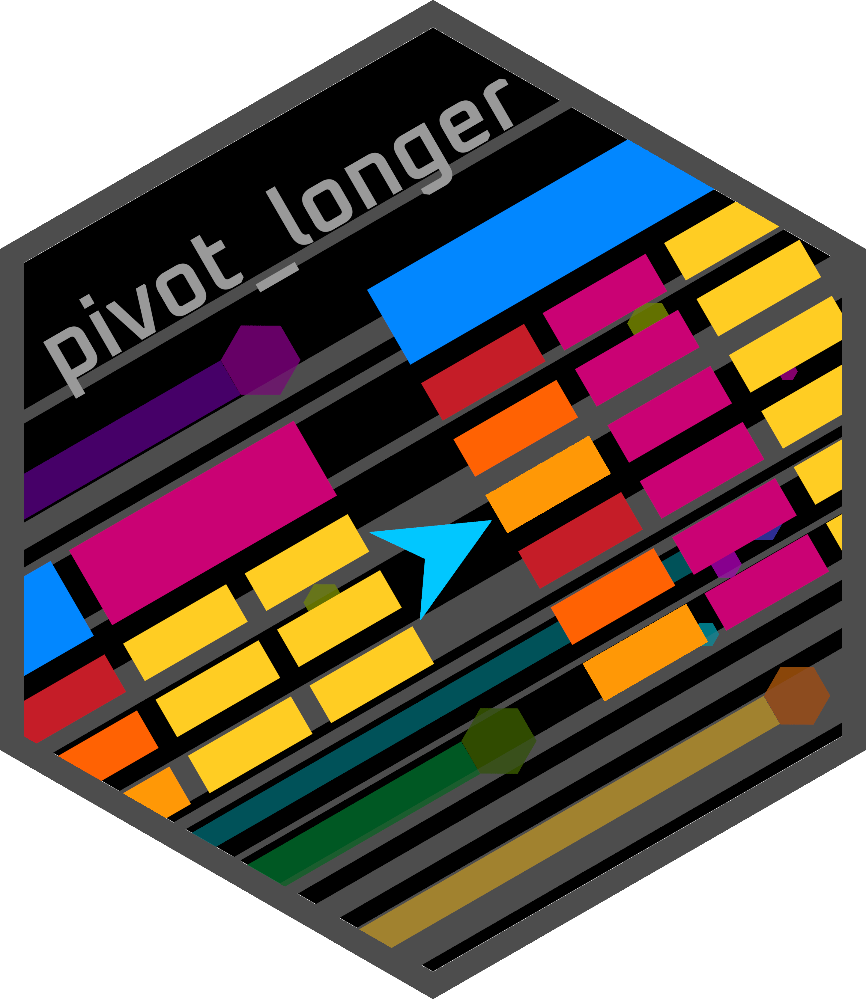
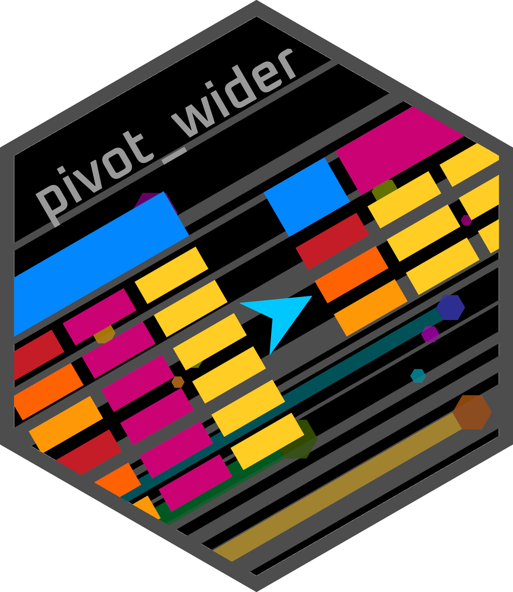
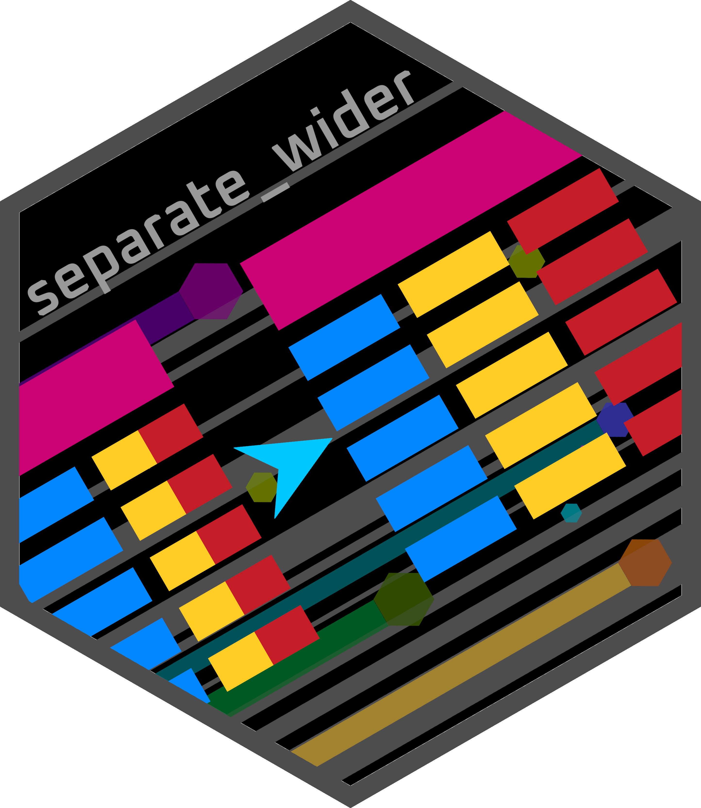
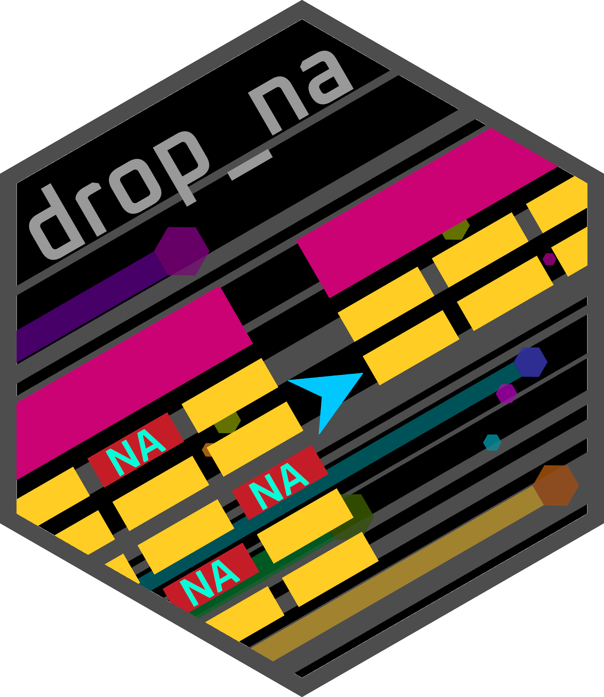
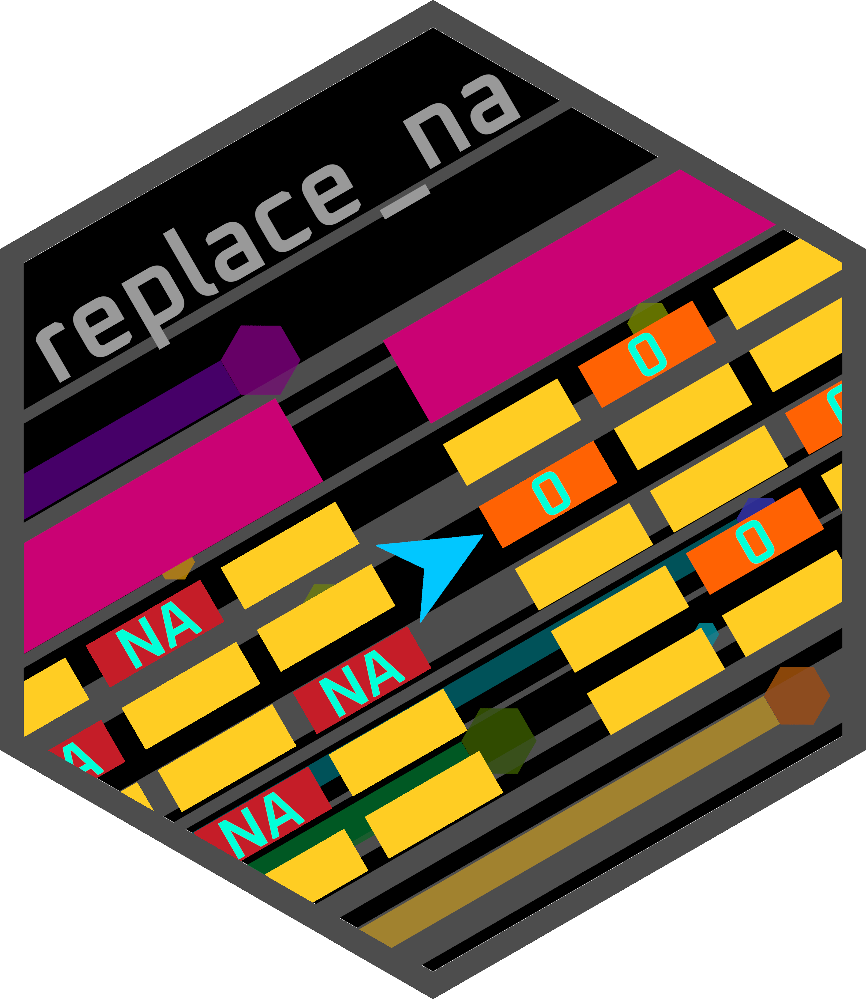

Tidyr
This tutorial covers the tidyr package. Its purposes is
to create tidy data which has three main features:
- Each variable is a column; each column is a variable
- Each observation is a row; each row is an observation
- Each value is a cell; each cell is a single value
Tidy data is particularly important for using ggplot2
for making data visualisations.
This tutorial will have three main sections:
- Pivoting: Changing the structure of a
tibble to long or wide
ggplot2requires data/tibbles to be long
- Character vectors: Separating and uniting character columns
- Missing values: Removing or replacing NAs in tibbles.
Long versus wide
Wide and long data/tables contain the same information but are structured differently.
Wide
Wide data is great for humans to read but is not
optimal for manipulation and analysis with tidyverse
packages.
Wide data contains multiple columns of the same metric. It is what most people are familiar with when looking at data in a table.
Below is an example of a wide tibble. It shows the captured production of fisheries in metric tons.
The wide tibble is quite easy to read and you can quickly find the value of the entity and year you are interested in visually. The features of this wide tibble include:
- One row per Entity
- One column per Year
- The metric ton values are spread throughout columns and rows.
Long
Long data is not very human readable, being very
long/tall, but is required for tidyverse packages and is
easier to manipulate.
Long data has each observation/value is in its own row. There will be multiple columns of metadata but only one row of the values of interest.
Below is an example of a long tibble containing the same data as the wide tibble above:
The long tibble is harder to read but much better
suited for tidyverse. In fact, the previous tutorials have
all been using long tibbles.
Features of the long tibble include:
- Each observation (Metric_tons) is in its own row
- There are multiple rows per Entity
- The Year values are in their own column rather than being column names
Due to these differences the long tibble has more rows (226 vs 4) whilst the wide tibble has more columns (60 vs 3 ). In other words, the long tibble is longer and the wide tibble is wider.
pivot_longer()

The pivot_longer() function is a relatively
straightforward function for longifying a tibble.
Pivot longer exercise
Read through the below link and use it as a guide to complete the challenges.
Challenge 1
Longify the tibble bat_roost_wide_tbl so you have the
following columns:
- Area
- Species: The Species names, currently set as column names
- MeanMaxCountInAnyYear: The Mean max count in any year, currently set as values
bat_roost_wide_tblbat_roost_wide_tbl |>
#Longify tibble
tidyr::pivot_longer(!Area, names_to="Species", values_to="MeanMaxCountInAnyYear")Challenge 2
Create the below long tibble with the wide tibble,
living_planet_wide_tbl.
living_planet_wide_tblliving_planet_wide_tbl |>
#Longify tibble
tidyr::pivot_longer("1970":"2018", names_to="Year", values_to="AverageIndex")Brilliant! The next function is pivot_wider().
pivot_wider()

The pivot_wider() function is a relatively
straightforward function for widening a tibble.
Pivot longer exercise
Read through the below link and use it as a guide to complete the challenge.
Challenge 1
Widen the living_planet_tbl tibble so
it contains the Average Index values across the years. You
will need to :
- Remove the columns
Upper IndexandLower Indexbefore widening- The function
dplyr::select()can be used
- The function
- Widen the tibble
- Take the names from the
Yearcolumn - Take the values from the
Average Indexcolumn
- Take the names from the
- Note: Column/variable names with spaces need to be
quoted with backticks (
`Average Index`.
living_planet_tblliving_planet_tbl |>
#Select wanted columns
dplyr::select(Region:`Average Index`) |>
#Widen tibble
tidyr::pivot_wider(names_from=Year, values_from=`Average Index`)Excellent! Its time to look at sperating and uniting character vector columns.
Character vectors
Next we’ll see how we can seperate or combine character vector columns with:
separate_wider_delim(): Splits a string column into multiple columns by a delimiter.unite(): Combines/unites multiple string columns into one column.
seperate_wider()

The separate_wider_delim() function can split a
character column into multiple columns.
Separate exercise
Read through the below link and use it as a guide to complete the challenge.
Challenge 1
Separate the column Area of the
bat_roost_wide_tbl to the following columns:
County, Region, and Country. The
delimiter is ;.
bat_roost_wide_tblbat_roost_wide_tbl |>
tidyr::separate_wider_delim(Area, delim=";",
names = c("County","Region","Country"))Super! We will look at separate_wider()’s opposite:
unite().
unite()
The unite() function can combine multiple character
columns into one.
Unite exercise
Read through the below link and use it as a guide to complete the challenges.
Challenge 1
With the amphibian_div_tbl unite the below columns in
the specified order to create the column Lineage. Use the
separator ; and do not retain the original columns.
OrderFamilyGenusSpecies
amphibian_div_tblamphibian_div_tbl |>
unite("Lineage", c("Order","Family","Genus","Species"),
sep=";")Challenge 2
With the mushroom_tbl unite the below columns in the
specified order to create the column
cap_shape_surface_color. Use the separator _
and retain the original columns.
cap_shapecap_surfacecap_color
mushroom_tblmushroom_tbl |>
unite(cap_shape_surface_color,
c("cap_shape","cap_surface","cap_color"),
sep = "_", remove=FALSE)Fantastic! Onto the final section: dropping and replacing
NAs.
Missing data
Many datasets will have missing data/values in the form of
NAs. For many things these can be left alone. However, some
calculations, such as mean, will result in a value of NA if
an NA was in the data, not ideal.
there are two main functions that can be used to deal with
NAs:
drop_na(): Remove rows with NAs.replace_na()`: Replace NAs.
drop_na()

The drop_na() function can remove rows containing
NAs.
Drop NA exercise
Read through the below link and use it as a guide to complete the challenges.
Challenge 1
Drop/remove all rows with an NA.
amphibian_div_tblamphibian_div_tbl |>
tidyr::drop_na()Challenge 2
Drop/remove rows which have NAs in any of the columns
from Age_at_maturity_min_y to
Offspring_size_max_mm.
amphibian_div_tblamphibian_div_tbl |>
tidyr::drop_na(Age_at_maturity_min_y:Offspring_size_max_mm)Great! Instead of dropping NAs you can replace them.
replace_na()

The replace_na() function can replace NA
values in columns.
Replace NA exercise
Read through the below link and use it as a guide to complete the challenge.
Challenge 1
Replace NAs in the column non_dreaming of
the tibble mammal_sleep_tbl with 0s.
mammal_sleep_tblmammal_sleep_tbl |>
tidyr::replace_na(list(non_dreaming=0))Splendid!
Finish

Great effort on completing the tidyr tutorial. You’ve
completed challenges on pivotting tibbles, separating and uniting
character columns, and dealing with NAs.
The next tutorial is the one I conider the most fun: cretaing plots
with ggplot2.